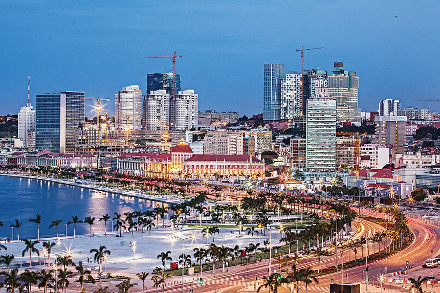

Discubra Angola
O que precisa saber antes de viajar para Angola
Conteúdo
Custo de Vida
O custo de vida em Angola pode variar bastante dependendo da região e do estilo de vida. Em geral, Luanda, a capital, é conhecida por ter um custo de vida relativamente alto em comparação com outras cidades do país, principalmente devido ao alto custo de bens importados e à demanda elevada por habitação e serviços.
Aqui estão alguns pontos a considerar ao avaliar o custo de vida em Angola:
- Habitação: Alugar um apartamento em Luanda pode ser bastante caro. Os preços variam dependendo da localização, tamanho e qualidade do imóvel. Em outras cidades de Angola, como Benguela ou Huambo, os preços podem ser mais baixos.
- Alimentação: A comida local, especialmente se comprada em mercados e feiras, tende a ser mais acessível. No entanto, alimentos importados podem ser caros.
- Transporte: Os custos de transporte podem variar. Em Luanda, o transporte público é limitado, e muitos residentes dependem de táxis ou carros particulares. O preço dos combustíveis também pode influenciar os custos.
- Saúde e Educação: Os serviços de saúde e educação em Angola podem variar em qualidade e custo. Acesso a cuidados de saúde de alta qualidade e educação internacional tende a ser mais caro, especialmente em áreas urbanas.
- Serviços e Entretenimento: Os custos de serviços e entretenimento, como comer fora, atividades culturais e esportivas, podem ser relativamente altos em comparação com outros países da região.
Se você estiver pensando em se mudar para Angola ou fazer uma visita, é uma boa ideia pesquisar mais sobre as áreas específicas e consultar fontes locais para obter uma visão mais precisa dos custos atuais.
Serviços de taxi
Os serviços de táxi em Angola, especialmente em Luanda, variam em termos de disponibilidade e qualidade. Aqui estão alguns detalhes importantes sobre como funcionam os serviços de táxi em Angola:
-
Táxis Convencionais
- Identificação: Em Angola, os táxis convencionais não têm um padrão uniforme de cor ou sinalização, o que pode dificultar a identificação. Muitas vezes, os táxis são carros comuns que podem ser chamados ou encontrados em pontos de táxi.
- Negociação de Preço: Em muitos casos, é necessário negociar o preço da corrida antes de iniciar a viagem, especialmente se o táxi não usar taxímetro. Em cidades maiores como Luanda, alguns táxis podem ter taxímetros, mas isso não é garantido.
- Locais de Táxi: É possível encontrar táxis em pontos específicos de táxi, nas ruas, ou você pode pedir um táxi pelo telefone, se souber o número de um serviço de táxi local.
Segurança
A segurança dos cidadãos em Angola é um tema amplo que envolve diferentes aspectos. Aqui estão alguns pontos principais sobre o sistema de segurança em Angola:
-
Segurança Pública
- Polícia Nacional: A Polícia Nacional de Angola é responsável pela segurança pública e pela manutenção da ordem. Ela é composta por várias unidades especializadas, como a polícia de trânsito e a polícia criminal. O número de efetivos pode ser limitado em algumas áreas, e há desafios relacionados à formação e equipagem.
- Forças Armadas: Embora seu papel principal seja a defesa nacional, as Forças Armadas de Angola também podem ser mobilizadas para ajudar em situações de emergência e para apoiar a polícia em casos de distúrbios civis.
-
Criminalidade
- Criminalidade Urbana: Em grandes cidades como Luanda, há preocupações com crimes urbanos, como roubos e furtos. As taxas de criminalidade podem variar dependendo da área e do momento.
- Crime Organizado: Existem preocupações com o crime organizado e a corrupção, que podem impactar a segurança e a justiça.
-
Sistema Judicial
- Justiça e Legalidade: O sistema judicial angolano enfrenta desafios relacionados à eficácia e à transparência. Questões como a lentidão processual e a falta de recursos podem afetar a segurança jurídica dos cidadãos.
- Reformas e Melhorias: O governo tem se esforçado para melhorar o sistema de justiça e para combater a corrupção, mas essas reformas ainda estão em andamento.
-
Segurança em Áreas Rurais
- Desigualdade Regional: A segurança pode ser mais limitada em áreas rurais e menos desenvolvidas em comparação com as cidades. Isso pode resultar em menos presença policial e maior vulnerabilidade a crimes.
-
Programas e Iniciativas
- Desenvolvimento e Segurança: O governo e várias ONGs trabalham para melhorar a segurança através de projetos de desenvolvimento que visam reduzir a pobreza e melhorar a infraestrutura, o que pode, por sua vez, contribuir para uma melhor segurança pública.
- Educação e Sensibilização: Existem iniciativas voltadas para educar a população sobre segurança e direitos civis, o que é essencial para fortalecer a segurança comunitária.
-
Segurança Privada
- Segurança Privada: Em algumas áreas e para certos grupos, como expatriados e empresas, a segurança privada é uma opção comum para garantir proteção adicional.
O governo e várias ONGs trabalham para melhorar a segurança através de projetos de desenvolvimento que visam reduzir a pobreza e melhorar a infraestrutura, o que pode, por sua vez, contribuir para uma melhor segurança pública.